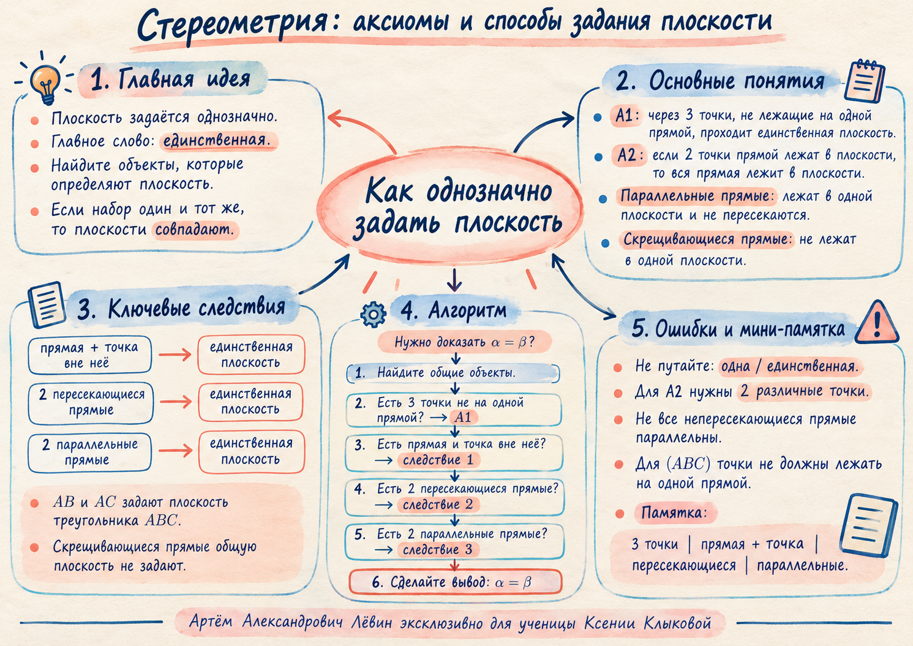

Маршрут занятия
A1Три точки, не лежащие на одной прямой.
Следствие 1Прямая и точка вне неё.
Следствие 2Две пересекающиеся прямые.
Следствие 3Две параллельные прямые.
Учебная цель: видеть набор объектов, который однозначно задаёт плоскость, и использовать единственность в коротких строгих доказательствах.
Карта связывает способы задания плоскости, алгоритм доказательства совпадения плоскостей и основные ошибки.

Ключевое слово — «единственная». Оно фиксирует существование плоскости и однозначность определяющего набора.
Параллельные прямые лежат в одной плоскости и не имеют общих точек. Скрещивающиеся прямые не лежат в одной плоскости.
Переключайте конфигурации и проверьте, какой набор действительно задаёт плоскость.
Формулировка. Через прямую и точку вне неё проходит единственная плоскость.
Формулировка. Через две пересекающиеся прямые проходит единственная плоскость.
Формулировка. Через две параллельные прямые проходит единственная плоскость.
Выберите набор и проследите, почему две названные плоскости обязаны совпасть.
Условия сохранены из чек-листа занятия. Раскрывайте решение после собственной попытки.
Единственная плоскость; следствие 2.
Две параллельные прямые задают единственную плоскость, поэтому α и β совпадают.
AB и AC пересекаются в A; примените следствие 2.
A,O,B не лежат на одной прямой и по A1 задают единственную плоскость; по A2 она содержит обе прямые.
M∉a; по следствию 1 прямая a и точка M задают единственную плоскость.
Следствие 2: p и q задают единственную плоскость.
C∉a, поэтому A,B,C не лежат на одной прямой. По A1 они задают единственную плоскость; она совпадает с плоскостью параллельных a,b.
Следствие 1: l и M определяют единственную плоскость.
M∉a и обе плоскости содержат a и M; следствие 1 даёт единственность.
Предположите α=β. Тогда M,N лежат в одной плоскости с a; по A2 вся b лежит там же, что противоречит скрещиванию a и b.
1. Ключевое слово в способах задания плоскости?
2. Сколько различных точек прямой требуется для A2?
3. Какой факт позволяет сразу применить следствие 2?
4. Все непересекающиеся прямые в пространстве параллельны?